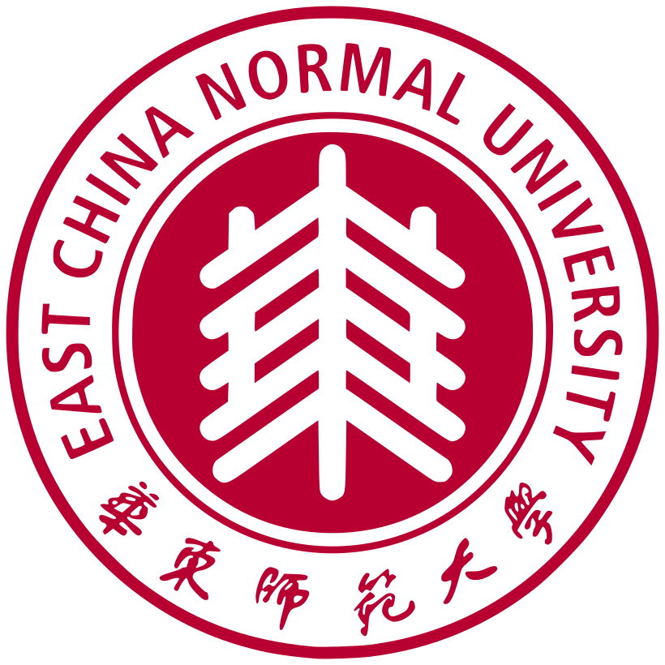

About me关于我
I study how people learn and reason with AI.我关注 AI 参与时，人们如何学习与推理。
I'm a master's student at Peking University's Graduate School of Education, advised by Prof. Yizhou Fan.
我是北京大学教育学院教育技术系硕士研究生，导师为范逸洲老师。
My research is concerned with LLM-based learner simulation, complex problem solving and learning analytics. I build and study AI-supported learning environments, using traces of learners' decisions and interactions to understand how their reasoning develops over time.
我的研究围绕大语言模型模拟学习者、复杂问题解决与学习分析展开。我参与开发 AI 支持的学习环境，并通过学习者的决策与交互记录分析推理过程如何随时间变化。
Research研究工作
LLM-Based Learner Simulation for Complex Problem Solving
I'm exploring how API-based language models can simulate differences in learners' approaches to complex problem solving without fine-tuning. Current work involves learner-role configurations and process-level evaluation. This is an ongoing study.
探索在不微调模型的条件下，如何通过 API 调用的大语言模型模拟不同学习者的复杂问题解决过程。目前正在探索学习者角色设定与过程层面的验证方法。
Hypothesis-Space Development in AI-Supported Clinical Reasoning
Using 385 case trajectories from 121 medical students, this study follows how ranked diagnostic hypotheses, written evidence and candidate sets change as new information appears. Embedding-based comparisons and transition analyses help examine how revisions relate to different forms of AI feedback.
基于 121 名医学生的 385 条病例轨迹，分析新信息逐步呈现时诊断假设排序、文本证据与候选集合的变化。结合语义向量和状态转移分析，研究修订行为与不同 AI 反馈之间的关系。
Reliable LLM Coding and Human–AI Collaborative Learning Analytics
Compared LLMs with fine-tuned classifiers on deductive dialogue coding, investigated errors on infrequent categories and evaluated selective human review as part of a collaborative coding workflow.
比较大语言模型和经过微调的分类模型在演绎式对话编码中的表现，分析低频类别的识别问题，评估选择性人工复核的人机协作编码流程。
Read the paper ↗阅读论文 ↗Multi-Agent Clinical Reasoning Learning Environment
Co-designed and developed a learning platform with virtual patients, examination reporters, an AI assistant and structured teaching feedback. The environment records diagnostic choices, reasoning and reflections for learning-process analysis.
参与研发包含虚拟病人、检查汇报员、AI 助手和结构化带教反馈的学习平台，记录诊断选择、推理过程与反思内容，用于学习过程分析。
Publications学术成果
2026Beyond Socratic Questioning: Designing GenAI-mediated Metacognitive Scaffolding for Clinical Reasoning in Medical Education
A study of GenAI-mediated metacognitive scaffolding to support medical students' clinical reasoning. Accepted for publication; the linked version is a preprint.
研究生成式 AI 介导的元认知支架如何支持医学生的临床推理。论文已录用；下方链接为预印本。
Preprint ↗预印本 ↗2026When LLMs Fall Short in Deductive Coding: Model Comparisons and Human–AI Collaboration Workflow Design
A comparative study of LLMs and fine-tuned models in theory-driven dialogue coding, followed by the design and evaluation of a human–AI collaborative workflow. Proceedings of LAK 2026, pp. 685–696.
比较大语言模型与微调模型在理论驱动对话编码中的表现，并设计和评估人机协作编码流程。LAK 2026 论文集，第 685–696 页。
DOI ↗2026Designing a Multi-Agent Collaborative Learning Environment for Complex Problem Solving: A Design-Based Study
A design-based study of a collaborative multi-agent learning environment for complex problem solving. In Chinese, 44(2), 30–42+13.
围绕复杂问题解决任务，采用设计研究方法构建多智能体协同学习环境。《远程教育杂志》44(2)，30–42+13。
DOI ↗2026Developing and Validating a Coding Scheme for Clinical Reasoning in History Taking Using Generative AI-Based Virtual Patients: Systematic Text Condensation Approach
Developing and validating a coding scheme to examine clinical reasoning during simulated history taking with generative AI virtual patients.
针对生成式 AI 虚拟病人问诊过程中的临床推理，开发和验证分析编码框架。
DOI ↗2025Breaking Human Dominance: Investigating Learners' Preferences for Learning Feedback from Generative AI and Human Tutors
Investigating how learners' preferences for human-tutor and GenAI feedback differ across feedback interfaces and learning conditions.
研究不同反馈界面和学习条件下，学习者对人类导师与生成式 AI 反馈的偏好及其变化。
DOI ↗2025How GenAI Affects Metacognition in Self-Regulated Learning: Between Enhancement and Inhibition
A book chapter considering how generative AI can support or inhibit metacognitive processes in self-regulated learning. Pages 148–177.
讨论生成式 AI 对自我调节学习中元认知过程的促进与抑制，以及可能引发的过度依赖问题。第 148–177 页。
DOI ↗Two additional co-authored manuscripts are under review at LAK 2027. Titles are withheld during double-blind review.
另有两篇合著论文正在 LAK 2027 双盲评审中，暂不公开题目。
Education教育背景

Selected honors & service代表性荣誉与学术服务
- 2026Best Full Paper Nominee, International Conference on Learning Analytics & Knowledge (LAK 2026)LAK 2026 最佳全文论文提名
- 2026National Scholarship for Graduate Students, Peking University北京大学研究生国家奖学金
- 2025Global Silver Award, Global Digital Education Innovation Competition (AI for Learning track)全球数智教育创新大赛 AI for Learning 赛道全球银奖
- 2024Shanghai Outstanding Graduate, East China Normal University华东师范大学上海市优秀毕业生
- 2027Reviewer, International Conference on Learning Analytics & Knowledge (LAK 2027)LAK 2027 学术审稿人
Contact联系
I'm always glad to discuss research ideas.
欢迎交流研究想法。
For research correspondence, please email me at my university address.
学术交流可通过北京大学邮箱联系我。
zijianli@stu.pku.edu.cn ↗